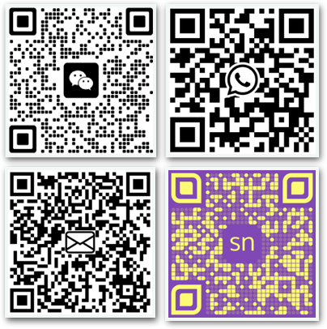

An explorer who’s lived in 4 countries and traveled to 15. A master of 3 different language scripts. An enthusiast of science and technology, proudly wearing the badge of “sci-tech geek”. A curious soul unraveling the realms of AI, intricacies of 3D computer graphics, fueled by an insatiable passion for learning. Onward and upward, with tenacity and sincerity.
- Trained an LLM in 1.5 months that could output Cantonese lyrics that were constrained by the desired 6-9 Cantonese tones.
- Reimplemented the DiffEdit research paper. Edit portions of an image via text only.
- Reimplementing the PyTorch library myself.
- Making back propagation an inherently easy topic to grasp.
- Optimizing algorithms to run quicker on a GPU.
Embodied AI Researcher | Oct. 2024 – Current
Multimodal Intelligence Laboratory, The Education University of Hong Kong
- Embodied AI
- General purpose robot manipulation and spatial intelligence
- Under Dr. Fu Hong
AI Engineer | Jul. 2024 – Aug.2024
Keweya Education Technology Limited – HKSTP Incubatee
- Project lead
- Studying, implementing, customizing diffusion models, and app development
- Review and analysis of research papers
LLM Researcher | Jun. 2024 – Jul. 2024
READily Limited – HKSTP Incubatee
- Project co-lead
- Intensive continued pretraining of large language models
- Research paper review and implementation
Training Coordinator | Mar. 2024
Kids4Kids Hong Kong
- Volunteer work
- Workshop planning and video editing
Teaching Assistant | Sep. 2020 – May. 2021
Beaconhouse College Program
- Teaching classes
- 1-1 student sessions
Language
- English: Native level fluency
- Mandarin: Basic proficiency
- Urdu: Fluent
Teaching
I know how to succinctly convey concepts in an engaging manner that makes sense. I don’t read a speech from PPT slides.
Programming
I have a very particular manner and philosophy to programming. It’s expository programming: literate, exploratory, and the way it should be done. See here, here, and here. Writing code is not the focus, solving the problem at hand is.
Python, PyTorch, Hugging Face (transformers, diffusers, datasets, tokenizers, peft, accelerate, etc), fastai, Pandas, NumPy, Scikit-Learn, Gradio, Quarto, Jupyter, nbdev
3D Computer Graphics
Blender
Artificial Intelligence (fast.ai)
Self-learning since April 2022.

Feb. 21st 2025 – Meet Salman Naqvi: the bright spark in AI and EdTech | See what the university’s written about me!
Dec. 27, 2024 – Featured among “The EdUHK Rising Stars” | See the university’s mini documentary on me!
Jun. 12, 2024 – Study Award from Hong Kong SAR Government | Hong Kong SAR Government Scholarship Fund Reaching Out Award
Dec. 7, 2023 — Invited Speaker at the Advanced Study Institute (ASI) Online Symposium | The Education University of Hong Kong and Hong Kong Baptist University
Apr. 2023 – Nov. 2023 — Co-lead Online Study Group | fast.ai Course Part 2: From Deep Learning Foundations to Stable Diffusion | Discord
Mar. 17, 2023 — Study Scholarship Offer from Kyoto University of Advanced Sciences, Kyoto, Japan | KUAS-E Scholarship
Feb. 24, 2023 — Study Scholarship Offer from The Eduation University of Hong Kong, Hong Kong SAR, China | EdUHK Full Entrance Scholarship
Nov. 2022 – Jun. 2023 – Grew an AI community of over 1100+ members | The Dataspace | Discord
Sep. 2022 – Mar. 2023 — Completed fast.ai Course Part 1: Practical Deep Learning for Coders
Jan. 17, 2023 — Placed in Top 12% of Contestants in Data Science Competition | Playground Series Season 3, EP2 | Tabular Classification with a Stroke Prediction Dataset | Kaggle
Sep. 2020 – May 2021 — Physics Teaching Assistant | Beaconhouse College Program Potohar Campus, Islamabad, Pakistan
Sep. 2020 – May 2021 — Mathematics Teaching Assistant | Beaconhouse College Program Potohar Campus, Islamabad, Pakistan
Jan. 2020 — Concert Marketing – Raised $8,400 | Beaconhouse College Program Potohar Campus, Islamabad, Pakistan
Aug. 2019 — Received 100% Scholarship for A-Level Program | Beaconhouse College Program Potohar Campus, Islamabad, Pakistan
2018 — Bronze Medal – Honorable Distinction Award | 15th International Kangaroo Linguistic Contest, Islamabad, Pakistan
Currently studying BSc (Honors) in Artificial Intelligence and Educational Technology at The Education University of Hong Kong.
IELTS – 8.5/9.0
Middle School and High School – CAIE IGCSE
Primary and Middle School – IB Primary and Middle Years Program